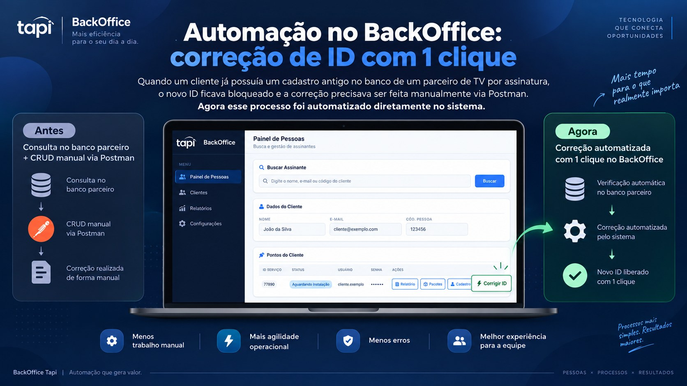
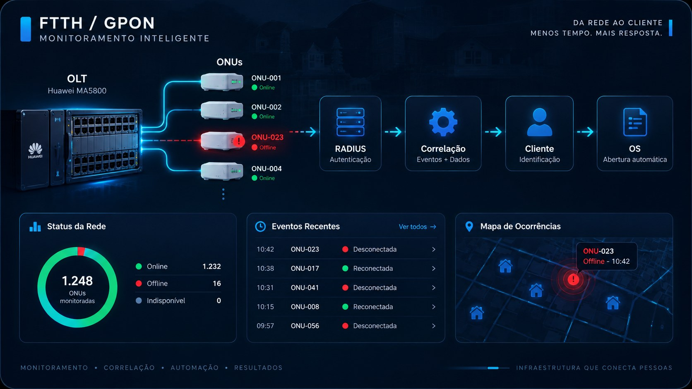

Travapon
Travapon
Travapon
Automação operacional para provedores que integra dados de rede ao Hubsoft, agilizando análise de eventos, criação de ordens de serviço e notificações operacionais.
Ver caseHome
Desenvolvedor | Automação | Redes
Construo software e cuido da infraestrutura que o sustenta. Atuo entre redes, automação e desenvolvimento, transformando processos manuais de operação em fluxos conectados, organizados e confiáveis.
Sobre
Atuo entre desenvolvimento web, redes de computadores e infraestrutura de telecomunicações — uma combinação que se traduz em software pensado para operar em condições reais.
No dia a dia, transito entre construir sistemas web e operar, monitorar e automatizar redes FTTH/GPON na linha de frente de um NOC/CGR. Essa dupla vivência muda a forma como penso software: considero disponibilidade, integração entre sistemas e o que realmente acontece quando algo falha em produção.
Meu diferencial é fazer diagnóstico e troubleshooting antes de sair escrevendo código — entender o problema de operação para então automatizar e integrar sistemas, reduzindo etapas manuais e aproximando as ferramentas da rotina de quem as usa.
Redes
Atuo na operação de um NOC/CGR de provedor de internet: monitoramento, troubleshooting e automação de infraestrutura FTTH/GPON. Uso desenvolvimento de software para tornar essa rotina mais rápida, confiável e menos dependente de tarefas manuais.
Projetos
Projetos organizados por foco: automação de operação e redes, e produtos web completos. Cada um nasceu de um problema real — da rotina de um NOC ao dia a dia de quem usa a ferramenta.
Travapon
Automação operacional para provedores que integra dados de rede ao Hubsoft, agilizando análise de eventos, criação de ordens de serviço e notificações operacionais.
Ver case
BackOfficeAutomação de um processo anteriormente executado manualmente via Postman, permitindo corrigir inconsistências de cadastro diretamente pelo BackOffice.
Ver case
Monitoramento FTTHSistema para identificar eventos de desconexão em redes FTTH e correlacionar informações da OLT, RADIUS e sistemas da operação para reduzir análise manual.
Ver case Shiai Sistem
Shiai Sistem
Plataforma para organização e gestão de competições esportivas, centralizando inscrições, dados de atletas e operação de eventos.
Ver projeto Keiko Fukuda
Keiko Fukuda
Plataforma web desenvolvida para presença digital e organização de informações da Escola de Judô Keiko Fukuda.
Ver projeto Portfolio RVieira
Portfolio RVieira
JavaScript
Ver projeto Academia 63
Academia 63
JavaScript
Ver projeto SISARB
SISARB
React
Ver projeto Sensei Vinicius
Sensei Vinicius
JavaScript
Ver projeto Augustus
Augustus
JavaScript
Ver projetoContato
Se você busca alguém capaz de conectar software, automação e infraestrutura para resolver problemas operacionais, vamos conversar.
Currículo
Profissional de Tecnologia da Informação com atuação em ambiente de provedor de internet, suporte à operação de redes, análise de incidentes, monitoramento e troubleshooting. Desenvolvo também ferramentas e automações para coleta, tratamento e integração de dados, combinando redes, automação de processos e desenvolvimento web.